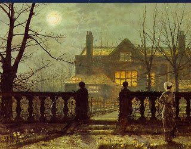

Bava Batra 61 - When One Sells a House

The following rulings were promulgated for the architectural styles, usages, and practices of these days. All such regulations depend on the prevailing custom in any given time or place.
If one sells a house, without specifying what is included in the sale, he has not sold the annex, even it is opens into the house, nor has he sold a storeroom in the rear of the house (such storeroom served as a storage area for valuables and did not function as part of the living area of the house), nor has he sold the rooftop if it has a parapet around it at least ten hand-breads high.